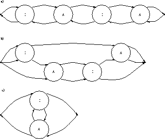

There is evidence that hadronic
correlation are dominated by classical instanton configurations.
How can that be, how can instantons bind pions, protons and other
light hadrons?
Here's how: The quark propagator in the field of an instanton
is dominated by zero modes .
These modes have very definite chirality properties: instantons
absorb left handed zero quarks and emit right handed ones while
antiistantons absorb right handed quarks and turn them into
left handed quarks. This fact is
crucial (sorry, bad joke) in order to understand the
anomaly . Blub blub
Source: Schaefer and Shuryak, upcoming article in Rev. Mod. Phys.